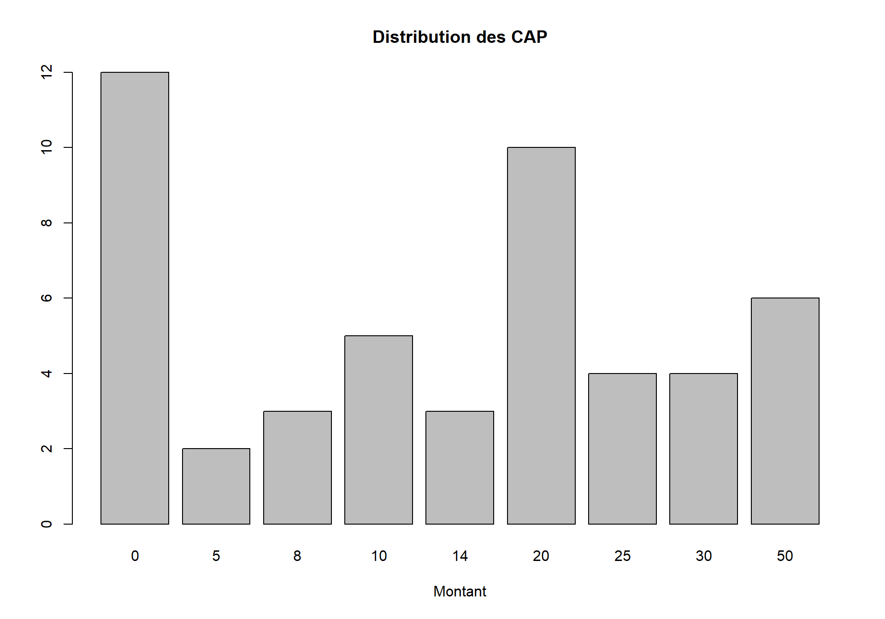

8 Estimation du CAP
Pour rappel, le consentement à payer est une somme que les personnes enquêtées sont prêtes à payer pour éviter la dégradation d’un bien environnemental ou encore son amélioration. Le consentement à payer (CAP) est l’expression en euro de la différence de bien-être (ou de satisfaction) associée à cette dégradation / amélioration de l’environnement.6.
A l’issue de cette enquête nous pouvons résumer le consentement à payer des Angevins pour éviter la dégradation de bien-être causée par les îlots de chaleurs en faisant une moyenne arithmétique des CAP individuels.
Si nous faisons cela nous trouvons un CAP de 17.2653. C’est le montant moyen du consentement à payer des Angevins pour éviter une perte de bien-être liée au rechauffement climatique induit par les îlots de chaleur urbain.
Or ce bref calcul ne permet pas de rendre compte de l’hétérogénéité des individus qui ont répondu au questionnaire. Pour avoir une mesure plus précise du consentement à payer il faudrait utiliser les méthodes économétriques pour l’évaluation des biens environnementaux.
Nous commençons d’abord par un modèle de régression linéaire en utilisant l’estimateur des moindres carrés ordinaires.
L’estimateur des moindres carrés ordinaires nous permet d’écrire le consentement à payer comme une fonction des caractéristiques des individus tels que l’âge, le revenu, la durée de vie à Angers.
Dans une régression par les moindres carrés ordinaires nous faisons l’hypothèse que le consentement à payer est une valeur continue.
8.1 Estimation par les OLS
Le test de significativité de Fisher indique une p-value de 0.612 ; Tous les coefficients de ce modèle hormi la constante ne sont pas significativement différents de 0. Donc notre modèle ne tient pas pour expliquer le consentement à payer des Angevins. Nous ne pouvons pas établir de relations causales entre les caractéristiques des individus et leur consentement à payer.
Nous affichons tout de même les coefficients que nous avons estimés :
| term | estimate | std.error | statistic | p.value |
|---|---|---|---|---|
| (Intercept) | 12.3309 | 8.332 | 1.4799 | 0.1476 |
| TRANCHE_REVENU1535 à 1845 | -0.0093 | 9.873 | -0.0009 | 0.9993 |
| TRANCHE_REVENU1845 à 2340 | -6.7315 | 9.222 | -0.7299 | 0.4702 |
| TRANCHE_REVENU2341 à 3653 | -6.0902 | 8.902 | -0.6841 | 0.4983 |
| TRANCHE_REVENUMoins de 1247 | -8.8406 | 7.365 | -1.2003 | 0.2379 |
| TRANCHE_REVENUPlus de 4700 | -22.3418 | 18.922 | -1.1807 | 0.2455 |
| PROPRIETAIRELogé(e) | -1.3554 | 7.920 | -0.1711 | 0.8651 |
| PROPRIETAIREPropriétaire | -3.2605 | 6.582 | -0.4954 | 0.6234 |
| TYPE_DOMICILEMaison | 7.7584 | 6.226 | 1.2461 | 0.2208 |
| QUALITE_VIE_ANGERSBonne | 9.4931 | 6.292 | 1.5089 | 0.1401 |
| QUALITE_VIE_ANGERSExcellente | 10.0666 | 8.379 | 1.2014 | 0.2374 |
| ASSISTE_DIFFERENCE_TEMPERATUREOui | -5.1506 | 5.248 | -0.9815 | 0.3329 |
| ZONE_CHALEUR_CENTRE_VILLE_ | 5.4464 | 6.173 | 0.8822 | 0.3835 |
8.2 Régression par intervalle
Le mode de paiement que nous avons choisi pour obtenir le consentement à payer des Angevins est une carte de paiement avec 11 valeurs proposées : 0, 5, 8, 10, 12, 14, 16, 20, 25, 30, 50. Sur les réponses que nous avons obtenues, voici la distribution des consentements à payer. 
A travers ce graphique nous observons que sur les 11 modalités proposées 9 ont été choisies. Les consentements à payer les plus fréquemment choisis sont 0€ et 20€. Avec une carte de paiement nous savons la valeur maximale que la personne est prête à payer mais pas la valeur en soi. Toutefois nous souhaitons modéliser économétriquement la relation qui existe entre les caractéristiques des individus et leur consentement à payer. Nous allons dans ce cas utiliser une méthode de régression appelée la régression par intervalle.
La régression par intervalles est utilisée pour modéliser les résultats qui ont une censure par intervalles. En d’autres termes, vous connaissez la catégorie ordonnée dans laquelle appartient chaque observation, mais vous ne connaissez pas la valeur exacte de l’observation. La régression par intervalles est une généralisation de la régression censurée.
Il convient donc de créer des intervalles des consentements à payer. Les intervalles que nous créons sont de [0, 5], [5, 10], [10, 20], [20, 30] et [30, 50].
Dans la base de données, voici comment se présente ces intervalles.
| CAP | CAP_LOW | CAP_UP |
|---|---|---|
| 8 | 5 | 10 |
| 0 | 0 | 5 |
| 5 | 0 | 5 |
| 8 | 5 | 10 |
| 0 | 0 | 5 |
| 0 | 0 | 5 |
| 20 | 10 | 20 |
| 10 | 5 | 10 |
| 20 | 10 | 20 |
| 0 | 0 | 5 |
Voici les résultats de l’estimation 7:
| term | estimate | std.error | statistic | p.value |
|---|---|---|---|---|
| (Intercept) | 10.910 | 5.1584 | 2.1149 | 0.0344 |
| TRANCHE_REVENU1535 à 1845 | 1.397 | 6.2284 | 0.2243 | 0.8225 |
| TRANCHE_REVENU1845 à 2340 | -3.173 | 5.7319 | -0.5536 | 0.5798 |
| TRANCHE_REVENU2341 à 3653 | -3.430 | 5.5713 | -0.6156 | 0.5381 |
| TRANCHE_REVENUMoins de 1247 | -5.311 | 4.6098 | -1.1522 | 0.2493 |
| TRANCHE_REVENUPlus de 4700 | -16.515 | 11.6243 | -1.4207 | 0.1554 |
| PROPRIETAIRELogé(e) | -2.196 | 4.9091 | -0.4474 | 0.6546 |
| PROPRIETAIREPropriétaire | -1.322 | 4.0893 | -0.3232 | 0.7466 |
| TYPE_DOMICILEMaison | 5.964 | 3.8752 | 1.5391 | 0.1238 |
| QUALITE_VIE_ANGERSBonne | 6.293 | 3.9023 | 1.6127 | 0.1068 |
| QUALITE_VIE_ANGERSExcellente | 5.960 | 5.2074 | 1.1445 | 0.2524 |
| ASSISTE_DIFFERENCE_TEMPERATUREOui | -3.556 | 3.2687 | -1.0878 | 0.2767 |
| ZONE_CHALEUR_CENTRE_VILLE_ | 2.503 | 3.8140 | 0.6563 | 0.5116 |
| Log(scale) | 2.266 | 0.1136 | 19.9450 | 0.0000 |
8.3 Modèle logit multinomial
Avec un modèle multinomial nous considérons chaque intervalle comme une modalité discrète. Nous cherchons à estimer la probabilité que le consentement à payer d’un individu pris au hazard appartienne à une de ces modalités selon les caractéristiques de cet individu (âge, sexe, revenu, fibre environnemental, durée de vie à Angers etc…)
Nous interprétons les coefficients au seuil de 5%. Les coefficients qui estiment une causalité significative sur la probabilité que le consentement à payer du répondant se trouve dans l’intervalle de 10 à 20 ans sont :
- La tranche de revenu 1845 à 2340.
- La tranche de revenu de plus 4700 €
- La constante n’est pas significative.
Pour un consentement à payer se trouvant dans l’intervalle 20 à 30, les variables significatives sont :
- Toutes les tranches du revenu
Pour un CAP compris entre 30 et 50 €, les variables qui sont significatives sont : - Revenus compris entre 1535 et 1945 - Revenu supérieur à 4700 € - Être logé - Qualité de vie à Angers bonne et excellente. - Lorsqu’il fait chaud au Centre-Ville.
Pour un CAP compris entre 5 et 10, les variables suivantes influencent significativement:
- Toutes les tranches de revenu
- Qualité de vie bonne et excellente.
Les détails des coefficients sont placés dans les annexes.
Eaufrance, http://www.economie.eaufrance.fr/content/consentement-%C3%A0-payer↩︎
Le script R utilisé pour le nettoyage, et l’estimation des modèles se trouve dans les annexes de ce travail.↩︎